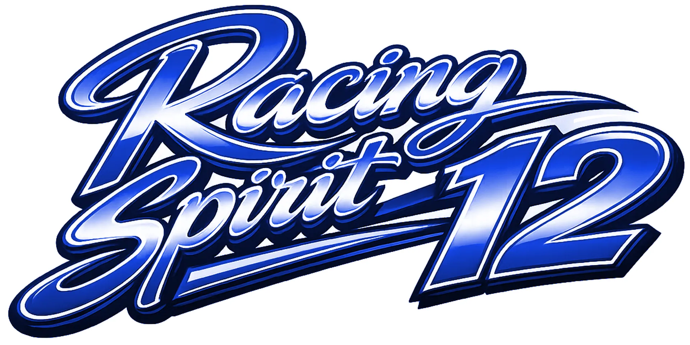

Racing Spirit 12 est née d’une conviction : le sport automobile est avant tout une école de vie. En plaçant notre structure sous l’égide du numéro 12 — symbole de la détermination de Senna et du panache de Villeneuve — nous ne cherchons pas à fabriquer un champion à tout prix, mais à transmettre des valeurs de respect, de discipline et de dépassement de soi.
Notre association est le fruit d’une transmission familiale débutée il y a quatre générations.
De la présidence du Karting Club d’Aire-sur-la-Lys par Yves Kerhello dans les années 70, à l'expertise de Pierre Kerhello (pilote et figure emblématique du karting des Etards), et la passion de Sandra Kerhello, aujourd’hui, c’est au tour de Louis Lamandé d’écrire sa propre histoire sur la piste.
Loin de la pression des résultats immédiats, notre philosophie est claire : l’épanouissement avant la performance. Nous refusons de forcer le destin. Notre rôle est de fournir à Louis un cadre technique et logistique bienveillant pour qu'il puisse explorer son potentiel, apprendre de ses erreurs et, surtout, prendre du plaisir à chaque virage.
Soutenir Racing Spirit 12, c’est accompagner un jeune pilote dans la découverte de ses capacités et le soutenir dans sa progression, à son rythme. C’est investir dans une aventure humaine où la réussite ne se mesure pas seulement au trophée, mais au sourire sous le casque et à la fierté d'avoir bien appris.
En baptisant notre structure Racing Spirit 12, nous avons voulu placer les premiers virages de nos jeunes pilotes sous l'égide d'un numéro de légende. Le 12, c'est bien plus qu'un chiffre sur une carrosserie. C'est l'héritage de géants :
C'est la volonté de transmettre ces valeurs à la nouvelle génération : le respect de la piste, le goût de l'effort et la quête de l'excellence.
Soutenir notre association, c'est accompagner de jeunes talents qui s'élancent avec cet esprit de compétition, un esprit forgé par les légendes, et porté aujourd’hui par ceux qui rêvent de suivre leurs traces.
Mais au-delà de la performance pure, notre priorité demeure l'épanouissement des jeunes pilotes. Nous veillons à ce que chaque tour de piste soit une source de plaisir et de construction personnelle, bien avant d'être une course contre le chronomètre.